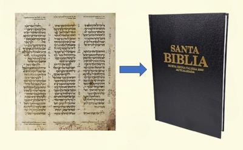

Cuando un cristiano afirma con toda seguridad «La Biblia dice…»; cuando afirma estar leyendo «la palabra de Dios», cree referirse a un texto perfectamente definido desde su origen, que salió de la Antigüedad, atravesó miles de años sin alteraciones, y llegó intacto hasta sus manos. Pero la Biblia no surgió siquiera como un libro único; ni fue escrita por una sola persona, en un solo idioma, ni en una sola época. Es una colección de textos redactados durante siglos, transmitidos mediante manuscritos copiados, revisados, traducidos e interpretados.


Y el problema comienza al pasar un escrito de un idioma a otro, porque una traducción no consiste en sustituir mecánicamente cada palabra de un idioma por otra palabra equivalente. ¿Por qué? Porque los idiomas no funcionan como códigos perfectamente intercambiables. Una palabra hebrea puede tener varios significados. Una expresión puede depender del contexto. Una construcción gramatical puede ser ambigua. Una metáfora puede perder parte de su sentido al ser traducida. Una idea perfectamente comprensible para un antiguo hablante de hebreo, puede resultar mucho menos evidente cuando ha sido trasladada al griego, después al latín y siglos después a otra lengua. Y además ocurre algo que los creyentes preferirían ignorar: el traductor tiene que tomar decisiones. Sí, porque cuando una palabra admite varias interpretaciones, alguien tiene que escoger una. Y esa elección termina siendo aceptada y repetida por las generaciones posteriores.
Sin duda un evento fundamental fue la traducción de la Torá judía al griego, lo que habría ocurrido en el Egipto ptolemaico, durante el siglo III a. e. c. El resultado se conoce como «Septuaginta», porque según la tradición, fue traducido simultáneamente por 72 sabios judíos en forma independiente, quienes milagrosamente, al final coincidieron exactamente. Una historia muy bonita, pero que no corresponde a la realidad, ya que, según la investigación moderna, fue un proceso prolongado, realizado por distintos traductores y en diferentes momentos. Y, por supuesto, cada traducción implicaba decisiones mientras el hebreo pasaba al griego. Y cuando esto ocurría, ciertas palabras, expresiones y matices, inevitablemente habrían adquirido nuevos sentidos, no porque los traductores fueran incompetentes, sino porque ningún idioma es un espejo perfecto de otro.
Pero después del griego, durante los primeros siglos del cristianismo también circularon numerosas versiones de las Escrituras en latín, sin que existiera todavía una Biblia unificada, estandarizada y oficial. Hasta que aparece Jerónimo de Estridón a fines del siglo IV, quien por encargo del papa Dámaso I, produce (a partir del año 382) su versión en latín corriente (no latín clásico), conocida como «Vulgata», nombre que proviene de la frase «vulgata editio» (edición divulgada). Partiendo del griego y versiones latinas existentes, Jerónimo compiló y tradujo al latín todo el Antiguo Testamento, mientras que para el Nuevo Testamento recurrió principalmente a fuentes hebreas, pero también a la tradición griega y versiones latinas anteriores.
Por tanto, contrario a lo que suele pensarse, la Vulgata no fue la traducción íntegra de un único manuscrito bíblico original perfectamente conservado. Fue el resultado de una gigantesca operación de recopilación, comparación, revisión y traducción. Y esto es muy importante, porque después de Jerónimo la misma Vulgata continuó siendo revisada y editada, surgiendo nuevas versiones. Así, por ejemplo, la Vulgata Clementina fue promulgada en 1592. De modo que incluso la Biblia latina, que durante siglos tuvo enorme autoridad dentro del cristianismo occidental, fue el resultado de un largo proceso de revisión y edición.
Pero eso no terminó allí. Después vinieron las traducciones al gótico (lengua germánica extinta hablada por el pueblo godo), alemán, inglés, castellano, e innumerables idiomas más. Así, en 1569, Casiodoro de Reina publicó la primera Biblia cristiana completa impresa en castellano, conocida como la «Biblia del Oso» por la ilustración de su portada, de un oso tratando de alcanzar un panal de miel colgado de un árbol. Pero no la tradujo a partir de la Vulgata, sino directamente de los idiomas originales: hebreo, arameo y griego. Y tampoco usó fuentes originales, sino compilaciones ya existentes, como la Biblia Ferrara para el Antiguo Testamento, y el texto griego editado por Erasmo de Róterdam para el Nuevo Testamento. Posteriormente la versión de Casiodoro de Reina fue revisada por Cipriano de Valera en 1602, naciendo así la Biblia Reina-Valera, la cual continuó modificándose a través del tiempo, produciéndose más de 10 revisiones principales oficiales. Y por supuesto, cada idioma tiene una historia diferente de sus actuales Biblias.
Entonces, ¿cuántas biblias hay? Como podemos imaginar ahora, no existe un número único de traducciones, habiendo versiones completas y parciales, revisiones, paráfrasis, versiones denominacionales, traducciones ecuménicas y nuevas ediciones basadas en diferentes decisiones textuales. Las versiones y revisiones se multiplicaron enormemente. Por eso, cuando alguien apela a lo que dice su Biblia como si fueran las palabras escritas en mármol de un texto original, desconoce toda la historia que hay detrás.
Pero existe algo todavía más importante. Antes de traducir un texto hay que determinar qué es lo que se va a traducir. Y desde los manuscritos bíblicos «originales» existen variantes, siendo necesaria la crítica textual (disciplina que compara manuscritos, traducciones antiguas, citas de autores antiguos y otros testimonios), para intentar reconstruir la lectura más antigua que pueda establecerse a partir de la evidencia disponible. Lo que significa que un investigador no puede simplemente escoger el manuscrito que mejor encaje con su doctrina, y declarar que ese es el verdadero.
¿Entonces la biblia es falsa? No precisamente. Que la Biblia tenga una compleja historia textual, no demuestra que todo lo que contiene sea falso. Pero tampoco permite afirmar que cada palabra haya sido conservada de forma perfecta. Más bien debemos estar conscientes de que la Biblia que tenemos hoy es el resultado de una larga historia humana de aproximadamente dos milenios. Pero sobre todo debemos tener claro que cualquier Biblia que hoy tengamos, no cayó del cielo traducida al español. Llegó hasta nosotros después de atravesar muchas manos, idiomas, manuscritos y decisiones humanas.
[Godless Freeman]
Comentarios
Comments powered by Disqus